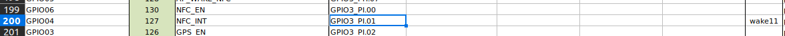

GPIO Control
JN GPIO Port
Jetson Nano
The Jetson GPIO signals are routed through a bidirectional level shifter before reaching the external GPIO connector. The level shifter translates between the Jetson's 1.8V I/O domain and the connector-side 3.3V domain.
| Connector Pin | Signal | Jetson SODIMM Pin | GPIO Identifier | Sysfs # |
|---|---|---|---|---|
| 1 | VDD_5V_SYS | — | Power | — |
| 2 | GPIO00 | 87 | GPIO3_PCC.04 | 228 |
| 3 | GPIO01 | 118 | GPIO3_PS.05 | 149 |
| 4 | GPIO02 | 124 | GPIO3_PH.06 | 62 |
| 5 | GPIO03 | 126 | GPIO3_PI.02 | 66 |
| 6 | GPIO05 | 128 | GPIO3_PH.07 | 63 |
| 7 | GPIO07 | 206 | GPIO3_PV.00 | 168 |
| 8 | GPIO10 | 212 | GPIO3_PV.01 | 169 |
| 9 | GPIO11 | 216 | GPIO3_PZ.00 | 200 |
| 10 | GND | — | — | — |
Jetson Xavier NX
Same external GPIO connector and level shifter as the Nano variant: the Jetson's 1.8V I/O is translated to the connector-side 3.3V domain. Note the GPIO identifiers and sysfs numbers differ from the Nano because the Xavier NX uses a different SoC and pin map.
| Connector Pin | Signal | SoC Signal | GPIO Identifier | Sysfs # |
|---|---|---|---|---|
| 1 | VDD_5V_SYS | — | Power | — |
| 2 | GPIO00 | USB_VBUS_EN0 | GPIO3_PZ.01 | 489 |
| 3 | GPIO01 | SOC_GPIO41 | GPIO3_PQ.05 | 421 |
| 4 | GPIO02 | SOC_GPIO23 | GPIO3_PQ.03 | 419 |
| 5 | GPIO03 | SPI2_SCK | GPIO3_PCC.00* | 264 |
| 6 | GPIO05 | SPI2_MOSI | GPIO3_PCC.02* | 266 |
| 7 | GPIO07 | SOC_GPIO44 | GPIO3_PR.00 | 424 |
| 8 | GPIO10 | SOC_GPIO21 | GPIO3_PQ.01 | 417 |
| 9 | GPIO11 | SOC_GPIO42 | GPIO3_PQ.06 | 422 |
| 10 | GND | — | — | — |
AON GPIO Logic
GPIO03 and GPIO05 (marked with *) are on the always-on (AON) controller and have inverted logic — write 0 to drive high, write 1 to drive low.
Level Shifter
GPIO pins on this connector operate at 3.3V. Do not apply 5V directly to any GPIO pin.
What is sysfs?
Linux exposes hardware interfaces under /sys using a special virtual filesystem called sysfs.
GPIO, PWM, I2C, SPI and other hardware components appear as simple files inside this structure.
Info
This allows GPIO pins to be controlled using simple file writes: export → direction → value.
Terminal Code Example
This example demonstrates how to set GPIO with sysfs ID 228 (GPIO00) to HIGH and LOW using the terminal.
How to Calculate the Sysfs Value from a GPIO Name?
- Download the pinmux configuration file for your specific Jetson module. It is available on NVIDIA's official documentation page.
- Inside the downloaded
pinmux_config_template.xlsmfile, you will find two sheets:- The first sheet contains general notes and explanations.
- The second sheet (jetson_[xx]_module) lists the GPIO names along with their detailed identifiers (e.g.,
GPIO3_PI.01).

- In an identifier such as
GPIO3_PI.01:- The letters (e.g., PI, where I is important) correspond to the
TEGRA_GPIO_PORTvalue. - The number after the dot (
01) represents the pin offset.
- The letters (e.g., PI, where I is important) correspond to the
- The Sysfs GPIO number is computed using the following formula:
TEGRA_GPIO = (TEGRA_GPIO_PORT * 8) + pin_offset- You can find this formula in the
tegra194-gpio.hheader file.
- You can find this formula in the
#define TEGRA_GPIO(port, offset) \ ((TEGRA_GPIO_PORT_##port * 8) + offset)
#define TEGRA_GPIO_PORT_A 0
#define TEGRA_GPIO_PORT_B 1
#define TEGRA_GPIO_PORT_C 2
#define TEGRA_GPIO_PORT_D 3
#define TEGRA_GPIO_PORT_E 4
#define TEGRA_GPIO_PORT_F 5
#define TEGRA_GPIO_PORT_G 6
#define TEGRA_GPIO_PORT_H 7
#define TEGRA_GPIO_PORT_I 8
#define TEGRA_GPIO_PORT_J 9
#define TEGRA_GPIO_PORT_K 10
#define TEGRA_GPIO_PORT_L 11
#define TEGRA_GPIO_PORT_M 12
#define TEGRA_GPIO_PORT_N 13
#define TEGRA_GPIO_PORT_O 14
#define TEGRA_GPIO_PORT_P 15
#define TEGRA_GPIO_PORT_Q 16
#define TEGRA_GPIO_PORT_R 17
#define TEGRA_GPIO_PORT_S 18
#define TEGRA_GPIO_PORT_T 19
#define TEGRA_GPIO_PORT_U 20
#define TEGRA_GPIO_PORT_V 21
#define TEGRA_GPIO_PORT_W 22
#define TEGRA_GPIO_PORT_X 23
#define TEGRA_GPIO_PORT_Y 24
#define TEGRA_GPIO_PORT_Z 25
#define TEGRA_GPIO_PORT_AA 26
#define TEGRA_GPIO_PORT_BB 27
#define TEGRA_GPIO_PORT_CC 28
#define TEGRA_GPIO_PORT_DD 29
#define TEGRA_GPIO_PORT_EE 30
#define TEGRA_GPIO_PORT_FF 31
- After substituting the port index and the pin offset into the formula, you obtain the corresponding sysfs GPIO number.
Example
GPIO00 sysfs value is 228
GPIO00 -> GPIO3_PCC.04
TEGRA_GPIO_PORT = CC
Offset = 4
TEGRA_GPIO = (TEGRA_GPIO_PORT_CC * 8) + 4 -> (28 * 8) + 4 = 228
Warning
This Formula Does NOT Apply to PMIC GPIOs (max77620-gpio)
- Jetson platforms have two separate GPIO controllers:
- tegra-gpio → [0–255] On-SoC Tegra GPIOs
- max77620-gpio → [504–511] PMIC GPIOs
- If the GPIO belongs to tegra-gpio → Use Tegra Port Formula.
- If it belongs to max77620-gpio → The sysfs number is assigned directly by the kernel and the correct calculation is
offset = sysfs_gpio - gpiochip_base # Example: 509 - 504 = 5
GPIO Usage
#include <stdio.h>
#include <stdlib.h>
#include <unistd.h>
#include <string.h>
#define GPIO_BASE "/sys/class/gpio"
static int gpios[] = {228, 149, 62, 66, 63, 168, 169, 200};
static const char *names[] = {
"GPIO00","GPIO01","GPIO02","GPIO03",
"GPIO05","GPIO07","GPIO10","GPIO11"
};
#define GPIO_COUNT (sizeof(gpios) / sizeof(gpios[0]))
static int gpio_write_file(const char *path, const char *value) {
FILE *f = fopen(path, "w");
if (!f) { perror(path); return -1; }
fprintf(f, "%s", value);
fclose(f);
return 0;
}
static void export_gpio(int gpio) {
char path[64], buf[8];
/* Export */
snprintf(buf, sizeof(buf), "%d", gpio);
gpio_write_file(GPIO_BASE "/export", buf);
/* Set direction */
snprintf(path, sizeof(path), GPIO_BASE "/gpio%d/direction", gpio);
gpio_write_file(path, "out");
}
static void unexport_gpio(int gpio) {
char buf[8];
snprintf(buf, sizeof(buf), "%d", gpio);
gpio_write_file(GPIO_BASE "/unexport", buf);
}
static void set_value(int gpio, int value) {
char path[64];
snprintf(path, sizeof(path), GPIO_BASE "/gpio%d/value", gpio);
gpio_write_file(path, value ? "1" : "0");
}
int main(void) {
/* Export all */
for (size_t i = 0; i < GPIO_COUNT; i++)
export_gpio(gpios[i]);
printf("Sequential blink — watch your LED bar...\n");
for (size_t i = 0; i < GPIO_COUNT; i++) {
printf(" ON -> %s (gpio%d)\n", names[i], gpios[i]);
set_value(gpios[i], 1);
usleep(500000); /* 500 ms */
set_value(gpios[i], 0);
usleep(200000); /* 200 ms */
}
printf("Done. Cleaning up.\n");
for (size_t i = 0; i < GPIO_COUNT; i++)
unexport_gpio(gpios[i]);
return 0;
}
#!/bin/sh
if [ $# -ne 2 ]; then
echo "Usage: $0 <GPIO_PIN> <VALUE>"
echo "VALUE: 0 (low) or 1 (high)"
exit 1
fi
GPIO_PIN="$1"
VALUE="$2"
if [ "$VALUE" != "0" ] && [ "$VALUE" != "1" ]; then
echo "Error: VALUE must be 0 or 1"
exit 1
fi
GPIO_PATH="/sys/class/gpio/gpio$GPIO_PIN"
if [ ! -d "$GPIO_PATH" ]; then
echo "$GPIO_PIN" > /sys/class/gpio/export
sleep 0.1
fi
echo "out" > "$GPIO_PATH/direction"
echo "$VALUE" > "$GPIO_PATH/value"
#!/usr/bin/env python3
import time
import os
GPIOS = [228, 149, 62, 66, 63, 168, 169, 200]
NAMES = ["GPIO00","GPIO01","GPIO02","GPIO03",
"GPIO05","GPIO07","GPIO10","GPIO11"]
GPIO_BASE = "/sys/class/gpio"
def gpio_write(gpio, filename, value):
with open(f"{GPIO_BASE}/gpio{gpio}/{filename}", "w") as f:
f.write(str(value))
def export(gpio):
export_path = f"{GPIO_BASE}/gpio{gpio}"
if not os.path.exists(export_path):
with open(f"{GPIO_BASE}/export", "w") as f:
f.write(str(gpio))
gpio_write(gpio, "direction", "out")
def unexport(gpio):
with open(f"{GPIO_BASE}/unexport", "w") as f:
f.write(str(gpio))
for gpio in GPIOS:
export(gpio)
print("Sequential blink — watch your LED bar...")
try:
for gpio, name in zip(GPIOS, NAMES):
print(f" ON → {name} (gpio{gpio})")
gpio_write(gpio, "value", 1)
time.sleep(0.5)
gpio_write(gpio, "value", 0)
time.sleep(0.2)
finally:
print("Done. Cleaning up.")
for gpio in GPIOS:
gpio_write(gpio, "value", 0)
unexport(gpio)